Services Cube 公司手册
Copyright © 2018 Services Cube. All rights reserved.
产品介绍
概述
什么是 Services Cube
Services cube 致力于联合有资质的服务提供商提供多种类型的现场服务，包括保洁服务，安保服务，维修服务，园艺服务等等。 Services cube App和网页管理系统使调度人员、分配任务、跟踪生产力变得非常容易。更重要的是，Services Cube 是联系您和您的客户之间的完美桥梁。
在 Services Cube，您可以进行以下及更多操作:
- Services Cube 功能齐全的控制面板可提供更准确的关于生产力、营收情况及工作情况的详细数据，并且据此提供有价值的见解和建议。
- 无缝的日程安排和强大的调度系统使您能够智能地管理您的员工。
- 集中和可视化地管理所有员工（全职/兼职/合同）以及他们的关键数据，包括资格证书、是否空闲、实时位置、工作技能、工作历史等。
- 实时地图和位置跟踪，以帮助您更好地掌握您的团队的实时位置以及何时交付工作。
- 提供给客户多种类型的现场服务，包括保洁服务，安保服务，维修服务，园艺服务等等。
- 我们的管理系统非常灵活，每种不同类型的服务均可按需设定不同的折扣率与税率。
- 对于需要使用物资的工作，Services Cube 可以帮助您轻松分配工作物资并管理仓库库存。
- 订单结束后系统将自动生成发票。有了Services Cube，管理发票变得十分简单。
产品介绍
登录系统
概述
使用 Services Cube 服务的前提是，您是我们的服务供应商。我们会提供给您设置公司账号的必要凭证。基于以上前提，下面的步骤将帮助您进一步了解如何登录。
基本步骤
怎样连接:
通过下面的链接登录 Services Cube 管理系统:
登录:
打开 Services Cube 管理系统后，即出现登录界面。假设您已经有了我们提供给您的公司名称，邮箱地址和密码，下面是如何正确登录的步骤。
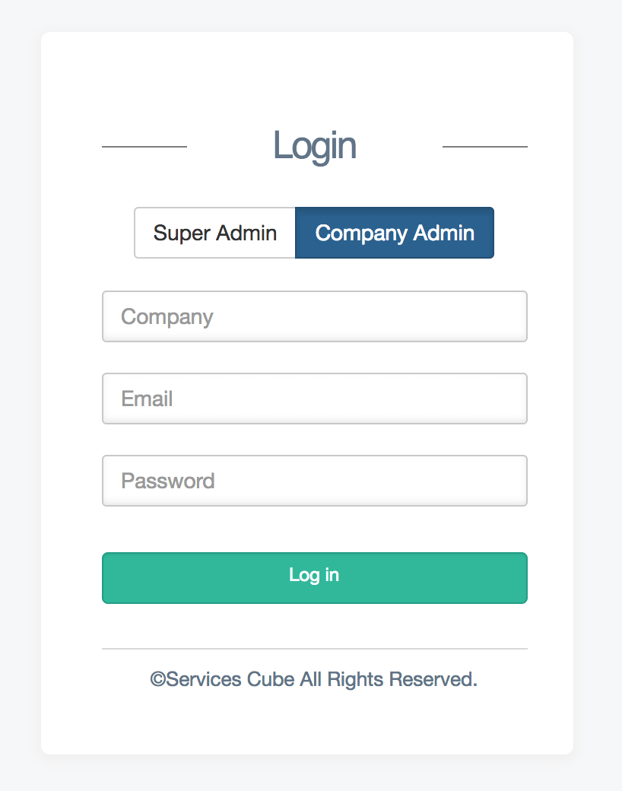- 请先选择“公司管理员”。
- 接下来，在登录页面填写所有的空格，包括公司名称、邮箱地址和密码。
- 完成后，点击登录。
产品介绍
快速开始: 工作前的准备
概述
为了帮助您更好的理解，本指南将按步骤详细说明工作开始前基础的准备与设置过程。不用担心，我们的系统非常简洁且操作灵活。
基本步骤
- 步骤 1: 添加角色 (角色即工人的工作角色，如:电工)
- 步骤 2: 添加服务 (包括一级服务和二级服务)
- 步骤 3: 添加工作物资 (工作中使用的物资)
- 步骤 4: 将角色和物资与服务绑定
- 步骤 5: 添加工人账号和客户账号
注意:
以上只是帮助您开始的基本步骤。由于其他的功能都基于以上步骤，所以请务必阅读接下来的内容，以便您能够正确地开始工作。
步骤 1: 角色设置
概述
描述
假设您的公司已经有了不同工作角色的工人，比如水管工、电工、清洁工等等。您需要做的第一件事就是根据公司的情况添加相应的工作角色。
注意:
- 角色均拥有两个参数：角色名称，UI 主题。
- 角色名称: 根据工人的工作角色，按您想要的方式来命名。不用担心，之后您仍然可以随时修改。
- UI 主题: 我们有几个不同的 UI 主题供您为不同的角色选择。每个主题均包含一系列不同的图片，都将在我们的 app 中使用。所以您选择的不是一张图片，而是一系列的图片。
步骤 1: 角色设置
添加角色
基本步骤
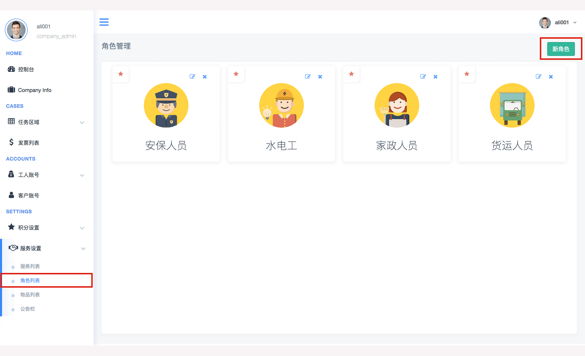 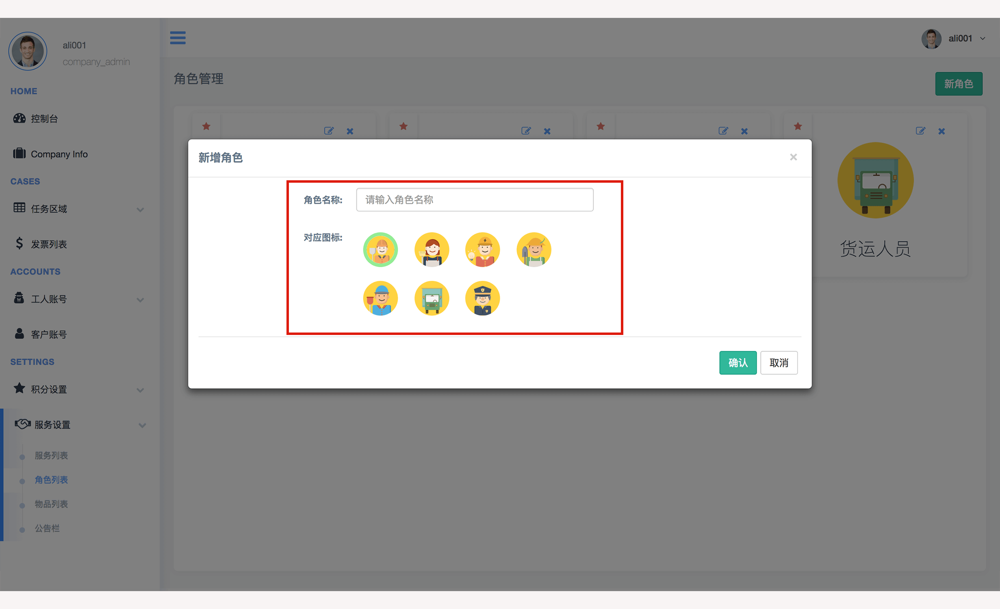
- 从侧边栏中选择“服务设置”。
- 再点击“服务设置”下拉菜单中的“角色列表”。
- 当你点击右上角的“新增角色”按钮时，它会提示你在弹出的模态对话框中输入所需的信息。
- 接下来，输入“角色名称”，并选择“UI 主题”。
- 最后，不要忘记点击“保存”来保存设置。
步骤 2: 服务设置
概述
描述
您已经设置了角色，接下来便是设置服务了。很自然的，具有不同工作角色的工人可以提供不同类型的服务。 例如，您希望提供安保服务，包括日间安保和夜间安保。因此，您应该添加“安保服务”作为一级服务，添加“日间安保”和“夜间安保”作为二级服务。
“物资管理” 就是您公司的物资管理系统。您可以记录物资名称、价格、金额以及与服务绑定，以便实时搜索库存状态。
注意:
- 每个一级服务都可能包含几个不同的二级服务，二级服务必须存在在一级服务之下。
- 服务可以是实时的服务，如安保服务；也可使是预订的服务，如清洁服务。
- 每种不同类型的服务均可按需设定不同的费用、折扣率与税率。
- 和角色一样，服务也需要选择 UI 主题。
步骤 2: 服务设置
一级服务
概述
一级服务十分重要。无论是日程安排选项，收费选项，app 中要用到的服务描述，还是UI主题，都是由一级服务完全控制的。
内容
- 服务名称: 为您想要提供的服务命名
- 调度选项: 根据服务特性选择“实时”或“预定”
- 收费选项: 根据服务特性选择“收费”或“免费”
- 服务描述: 服务描述将展示在app中，客户可见
- UI 主题: 每个主题均包含一系列不同的图片，都将在我们的 app 中使用
添加一级服务
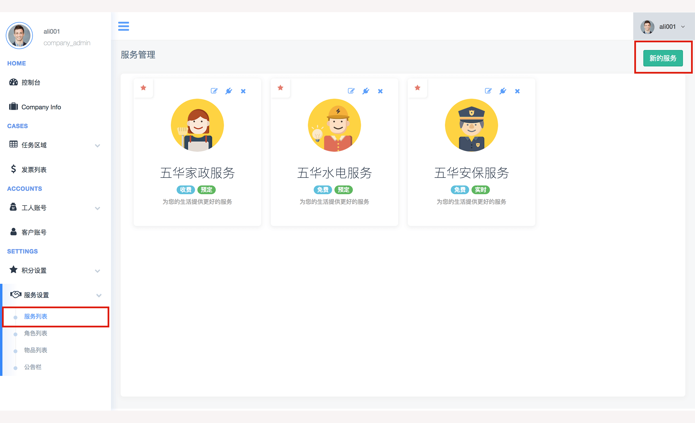 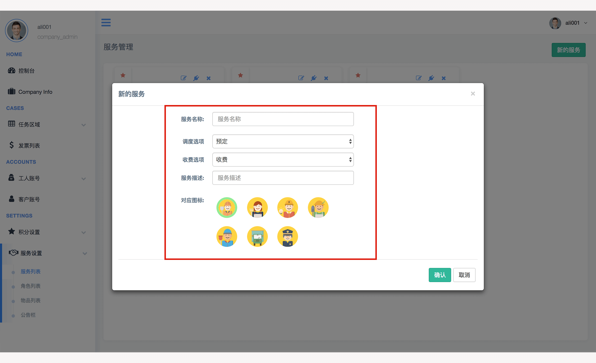
- 从侧边栏中选择“服务设置”。
- 再点击“服务设置”下拉菜单中的“服务列表”。
- 当你点击右上角的“新增服务”按钮时，它会提示你在弹出的模态对话框中输入所需的信息。
- 输入信息后，点击“完成”保存设置。
步骤 2: 服务设置
二级服务
概述
如上所述，二级服务不能离开一级服务存在。假设您已经添加了一级服务，接下来想要添加二级服务。二级服务控制更详细的设置，如价格，税率和折扣。二级服务的价格是独立的，例如一个一级服务可能包含两个不同价格的二级服务。
内容
- 服务名称: 为您想要提供的二级服务命名
- 服务价格: 服务每小时的费用
- 税率: 服务的税率
- 折扣: 服务的折扣
添加二级服务
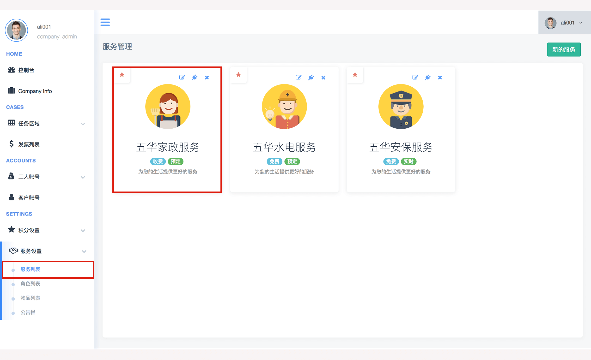 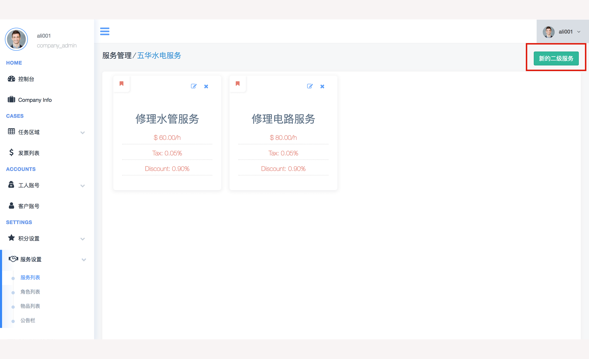 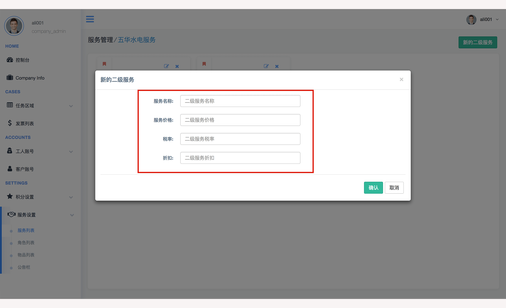
- 从侧边栏中选择“服务设置”。
- 再点击“服务设置”下拉菜单中的“服务列表”。
- 当你点击想要添加二级服务的一级服务面板时，便会弹出二级服务页面。
- 然后点击右上角的“新增二级服务”按钮，它会提示你在弹出的模态对话框中输入所需的信息。
- 输入信息后，点击“完成”保存设置。
步骤 2: 服务设置
工作物资
概述
“物资管理” 就是您公司的物资管理系统。您可以记录物资名称、价格、金额以及与服务绑定，以便实时搜索库存状态。 若工作中使用了物资，库存的物资的数量也会随之改变。
内容
- 物资名称: 按需将物资命名
- 价格: 物资的零售价格
- 总数: 当前物资的数量 (后续仍可修改)
添加物资
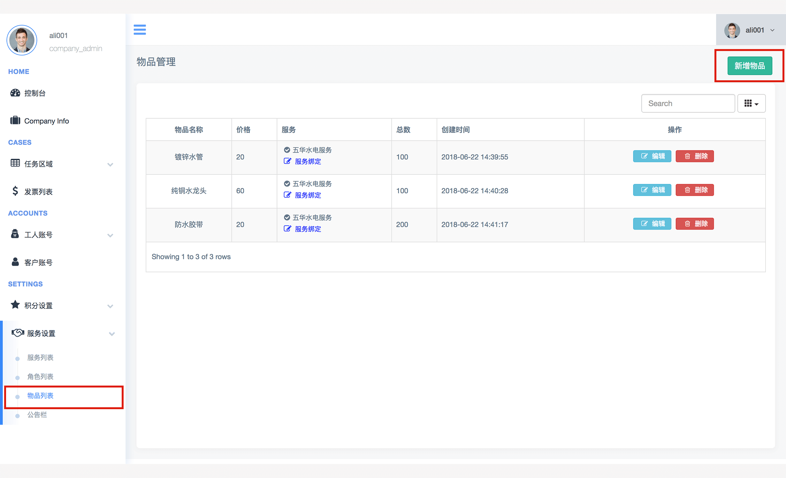 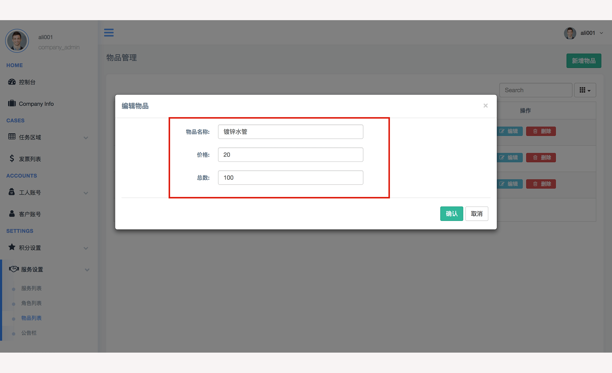
- 从侧边栏中选择“服务设置”。
- 再点击“服务设置”下拉菜单中的“物资列表”。
- 然后点击右上角的“新增物资”按钮，它会提示你在弹出的模态对话框中输入所需的信息。
- 输入信息后，点击“完成”保存设置。
步骤 3: 绑定
概述
描述
好了，我们已经设置好了角色、服务和物资，但是目前它们之前是分离的关系。这就像我们让工人站在仓库里，而不给他们分配服务或者给他们需要的工具。
首先，需要做两件事:
- 将角色和服务绑定。
- 将物资和服务绑定。
步骤 3: 绑定
绑定角色
概述
我们强烈建议您在添加新的服务之后立即绑定角色。这样不仅更有效率，而且可以避免忘记绑定角色。
绑定角色
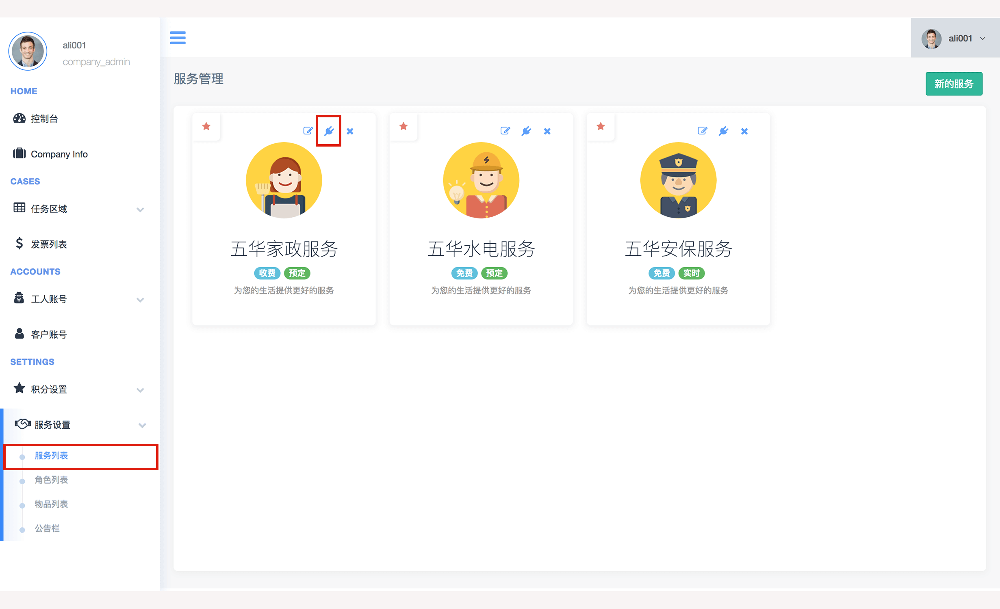 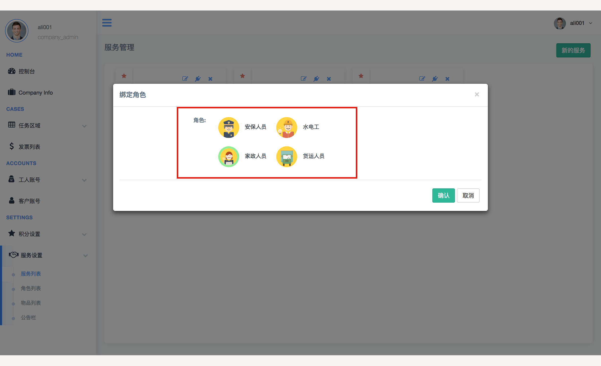
- 从侧边栏中选择“服务设置”。
- 再点击“服务设置”下拉菜单中的“服务列表”。
- 然后点击一级服务面板中的插头形状的按钮，会弹出一个模态对话框。
- 选择您想要绑定的角色。
- 最后，不要忘记点击“完成”以保存设置。
步骤 3: 绑定
绑定物资
概述
当物资与服务绑定后，物资才能在工作中使用。只有这样，库存的物资数量才会随着工作的消耗而减少，同时 app 中才会显示工作物资面板。
绑定物资
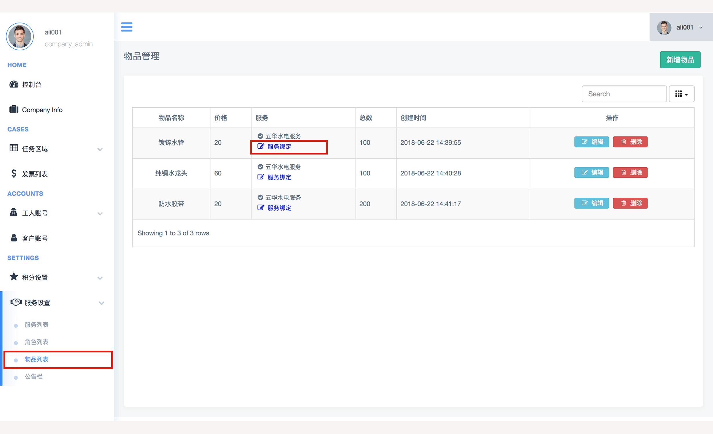 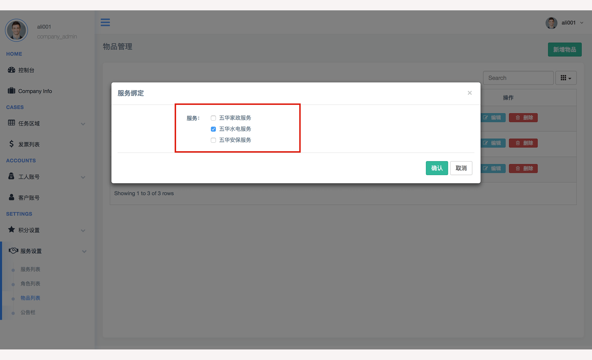
- 从侧边栏中选择“服务设置”。
- 再点击“服务设置”下拉菜单中的“物资列表”。
- 然后点击物资表格中的“绑定服务按钮”，会弹出一个模态对话框。
- 选择您想要绑定的服务。
- 最后，不要忘记点击“完成”以保存设置。
步骤 4: 账号设置
概述
描述
账号数据对公司来说至关重要。在 Services Cube 中，公司管理员可以查看、编辑和创建工人账号和客户账号。
接下来的步骤适用于刚开始创建账号的情况:
- 新建工人账号
- 新建客户账号
步骤 4: 账号设置
工人账号
概述
工人账号包含与工人相关的所有信息，如个人信息、订单信息、积分详情、请假日志和资格证书等。 但是创建一个新帐户很简单，你只需要输入一些必要的信息。
只需输入以下内容:
- 工作角色: 从已创建的角色中选择工人的工作角色
- 用户名: 输入工人的用户名
- 邮箱: 输入工人的有效的电子邮箱
- 密码: 输入原始密码 (密码可以后续再次修改)
基本步骤:
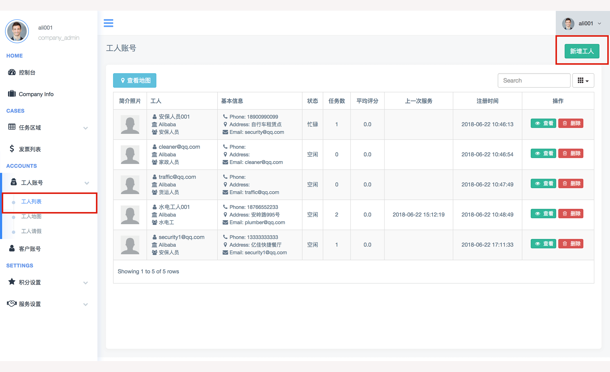 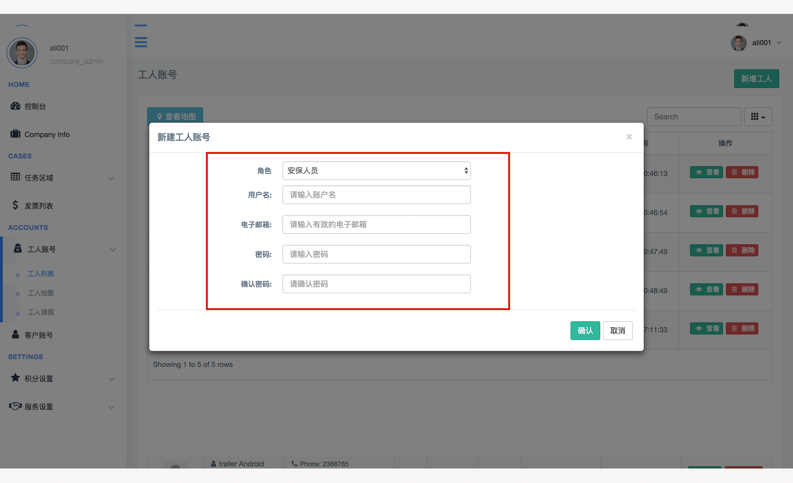
- 从侧边栏选择“工人账号”。
- 再点击“工人账号”下拉菜单中的“工人列表”。
- 再点击屏幕右上角的“新增工人”按钮，会弹出一个模态对话框。
- 输入所需信息。
- 最后，不要忘记点击“完成”以保存设置。
步骤 4: 账号设置
客户账号
概述
客户账号包含与客户相关的所有信息，如个人信息、订单信息、积分详情、信用卡详情等。 但是创建一个新帐户很简单，你只需要输入一些必要的信息。
只需输入以下内容:
- 用户名: 输入客户的用户名
- 邮箱: 输入客户的有效的电子邮箱
- 密码: 输入原始密码 (密码可以后续再次修改)
基本步骤:
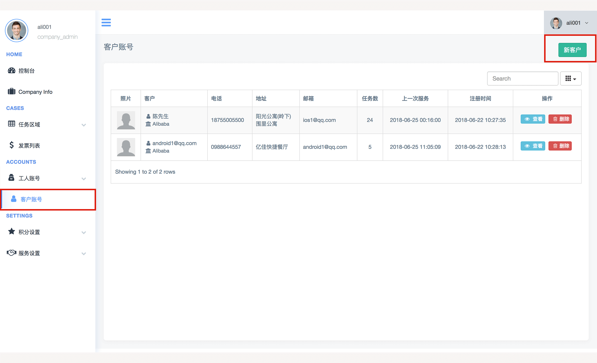 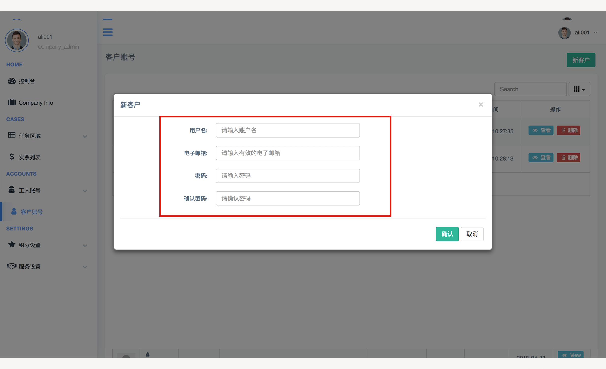
- 从侧边栏选择“客户账号”。
- 再点击屏幕右上角的“新增客户”按钮，会弹出一个模态对话框。
- 输入所需信息。
- 最后，不要忘记点击“完成”以保存设置。